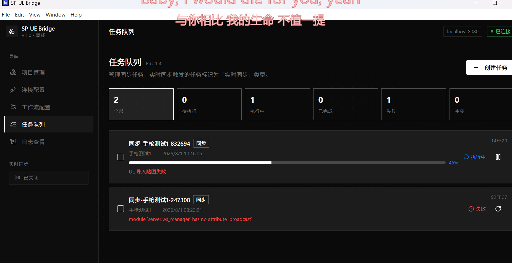
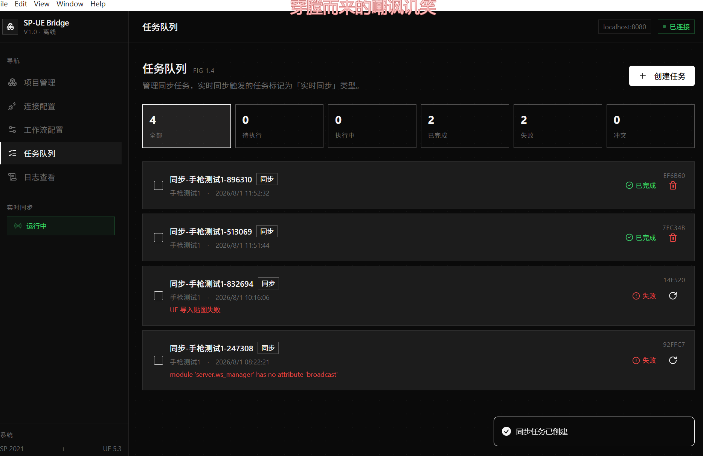

开发背景
在日常的3D美术工作流中，Substance Painter（SP）和Unreal Engine（UE）之间的材质资产同步是高频且繁琐的操作。每次在SP中完成材质绘制后，需要手动导出贴图、在UE中导入、重新连接材质节点、调整参数，流程重复且容易出错。
做这个工具的初衷其实很简单，我自己在熟悉这套流程的时候，强烈感觉到这一步真的没必要，非常浪费大家的制作时间。它不光是耗时间的问题，更消耗心力，是一种纯粹的重复性劳动。不管是我自己，还是身边的朋友、同事，我发现大家在这一步上都会特别受影响，怎么说呢，很影响心态，让人泄气。本来在SP里把材质做出来是有成就感的，结果一到了同步这步就开始磨人，做着做着热情就被消耗掉了。尤其是在商业游戏项目里，材质制作本身就是一个不断来回的过程——大家商量的想法会变，资产规范、命名规则、通道映射这些也会跟着调整。而且更离谱的是，这种改不是只改一次就定了，它是一直在变、要改好几次，你得跟着他们每一次调整的方案反复去改同一个东西，今天按这套规则同步完，明天又来一版新规则，后天可能再调一次，来回拉扯没完没了。这种反复的突发性返工比单纯重复更让人烦，因为你知道这些功夫本来是可以省掉的。所以才想把它自动化掉，让这一步不再成为拖累心态的环节，规则变了也能快速重跑一遍，而不是手动一点点改。
项目目标是开发一套纯本地离线的桥接工具，通过Python桥接服务实现两个软件的自动化通信，减少手动操作，提升日常工作效率。
工具定位
SP-UE Bridge 是一款连接 Adobe Substance Painter 2021 和 Unreal Engine 5.3 的工作流自动化工具，核心功能包括：
- 贴图自动导出：根据配置规则，自动从SP导出BaseColor、Normal、Roughness等贴图；
- 资产自动同步：将导出的贴图自动导入UE工程，并创建/更新材质资产；
- 材质节点映射：配置SP贴图通道与UE材质节点的映射关系，自动完成节点连接；
- 实时同步：开启后可自动检测SP材质变化并实时同步到UE，无需手动触发；
- 任务队列管理：统一管理同步任务、日志记录和异常处理。
整体架构采用 纯本地离线 设计，不依赖任何云服务，所有功能在本地环境运行。
技术架构
工具采用三层本地架构：
- Web前端：基于 React + Vite + TypeScript，提供项目管理、连接监控、工作流配置、任务队列、日志查看等功能页面；
- Python桥接服务：使用 Python 3.9+ 实现，托管Web前端，同时与SP和UE通信，负责任务调度和数据管理；
- SP/UE插件：SP侧通过Python插件监听本地端口接收指令，UE侧通过Remote Execution协议远程调用Python脚本。
通信流程：Web前端 → Python桥接服务 → SP Python插件（导出贴图）→ UE Remote Execution（导入贴图+创建材质）。
当前进展
版本：v0.1（初期开发中），目前正在进行基础框架搭建。
已完成或正在进行的部分：
- 1. Web前端基础框架：项目管理、连接配置、工作流配置、任务队列、日志查看等核心页面已完成基础布局；
- 2. Python桥接服务骨架：服务端基本结构搭建完成，包括SP客户端、UE客户端、任务运行器等模块；
- 3. SP插件框架：Substance Painter侧的Python插件基础结构已搭建；
- 4. 设计文档：完整的PRD需求文档和设计规范已整理，明确了功能边界和版本约束。
Web前端界面展示视频：
SP-UE Bridge 工具界面展示（项目管理/连接配置/任务队列等核心页面）
当前局限与待完善点
由于项目尚处于早期开发阶段，有不少需要后续推进的地方：
- 1. 核心功能未实现：贴图导出、资产同步、材质重连等核心自动化流程尚未完成；
- 2. 实时同步机制：变化检测和自动同步触发逻辑需要实现和测试；
- 3. 版本兼容性：目前仅针对SP 2021和UE 5.3特定版本，跨版本支持需后续适配；
- 4. 异常处理：各种边界情况（连接断开、API错误、冲突处理等）的完善和测试；
- 5. 界面完善：交互细节、状态反馈和用户体验需要打磨。
实际测试过程记录：
下面是一次真实的联调测试截图，可以直观看到当前的实际进度与遇到的问题。图中 SP 侧贴图导出环节失败，原因是 UE 端的 Remote Execution 插件一直未能正常启动，导致 Python 桥接服务无法与 UE 建立通信。昨天主要花了时间在端口连通性测试上，排查 SP 插件监听端口与 UE 侧远程执行端口的握手问题。

SP-UE Bridge 联调测试过程：SP 贴图导出失败，UE 插件未启动，正在排查插件连接的问题（2026年08月01日）
更新一张最新的测试过程截图，可以看到 UESP 工具的实际运行状态和界面反馈：

UESP 工具最新测试过程截图（2026年08月01日）
后续计划
后续开发计划大概分为以下几个方向：
- 1. 实现核心同步流程：优先打通"SP导出→UE导入→材质重连"的完整链路；
- 2. 完善实时同步：实现变化检测和自动触发机制；
- 3. 优化用户体验：完善Web界面交互，增加状态反馈和异常提示；
总结
SP-UE Bridge 目前还是初期开发阶段，主要完成了框架搭建和文档整理。作为日常材质工作流的自动化工具，它的目标很明确——减少SP和UE之间的手动同步操作，让美术同事能专注于材质创作本身。
后续核心功能逐步实现后，会大大改善SP-UE工作流的效率和稳定性。